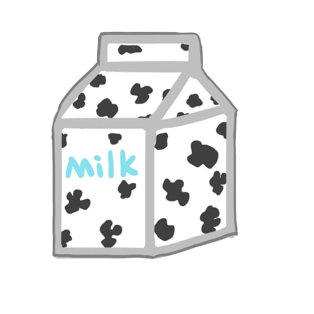
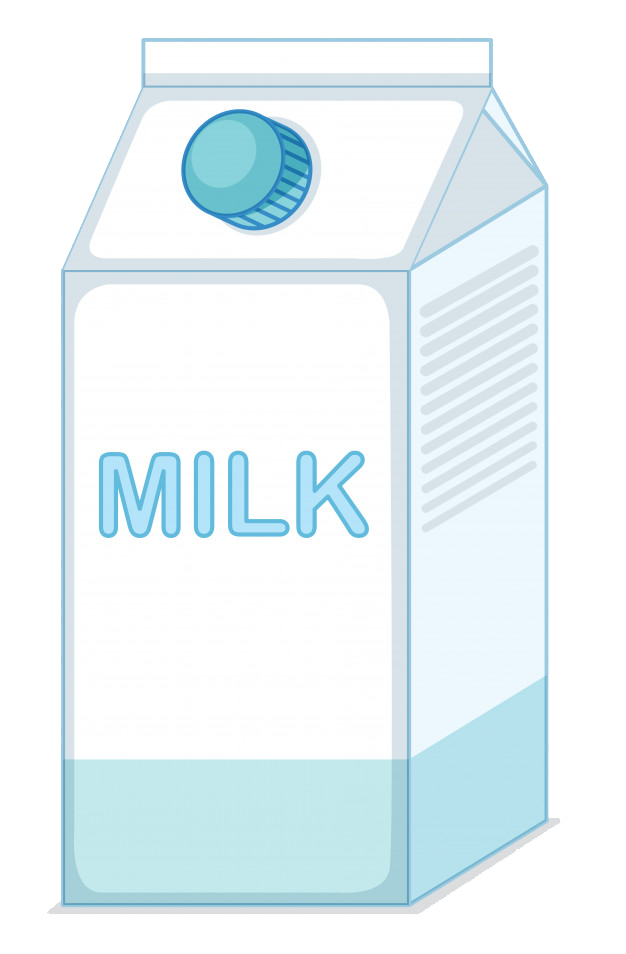
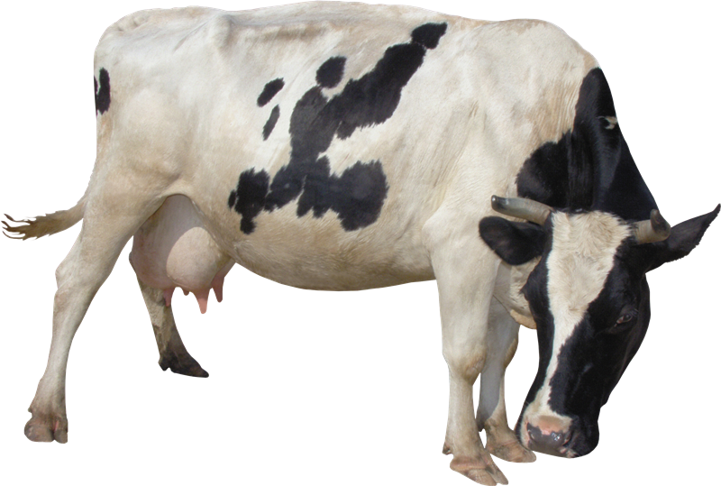

HELLO
- usefulness of milk
- what does it include
- on our body



WHAT IS MILK AND WHAT IS IT EATED WITH?
Молоко состоит из воды (на 85-90 %,) макро и микроэлементов. Основными полезными компонентами являются кальций, магний и фосфор. Также молоко богато витаминами группы А, В и D.Коровье молоко является самостоятельным продуктом и может употребляться в сыром виде, но делать это лучше за несколько часов до основного приема пищи. Оно нормализует пищеварение и улучшает память, но крайне не рекомендуется совмещать в одном приеме пищи молоко и мясо, рыбу, овощи и сыры.
Молоко используется при приготовлении огромного количества блюд: его добавляют в тесто для блинов и для выпечки, на нем готовят каши и супы, делают соусы, добавляют в кофе или чай.
Молоко Valio отличается натуральным вкусом и высочайшим качеством, ведь финские стандарты являются одними из самых строгих в мире, что не удивительно – именно в этой стране проживают самые большие любители и ценители этого продукта. Благодаря современным высокотехнологичным методам тепловой обработки сырья (пастеризации и ультрапастеризации), продукция Valio обладает длительным сроком хранения, при этом содержащиеся в молоке кальций, белок и витамины не разрушаются, и молоко сохраняет все полезные свойства.